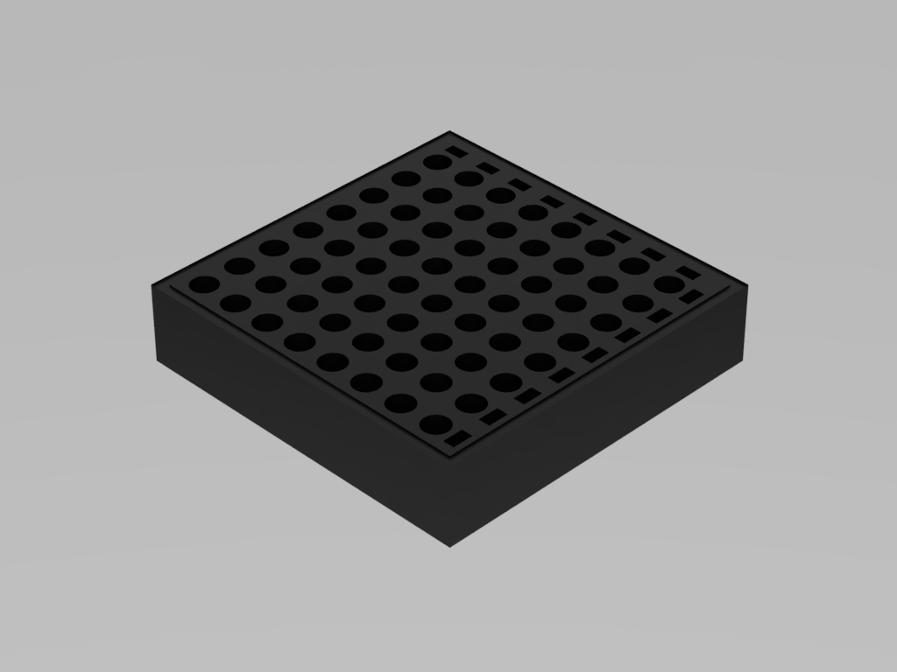
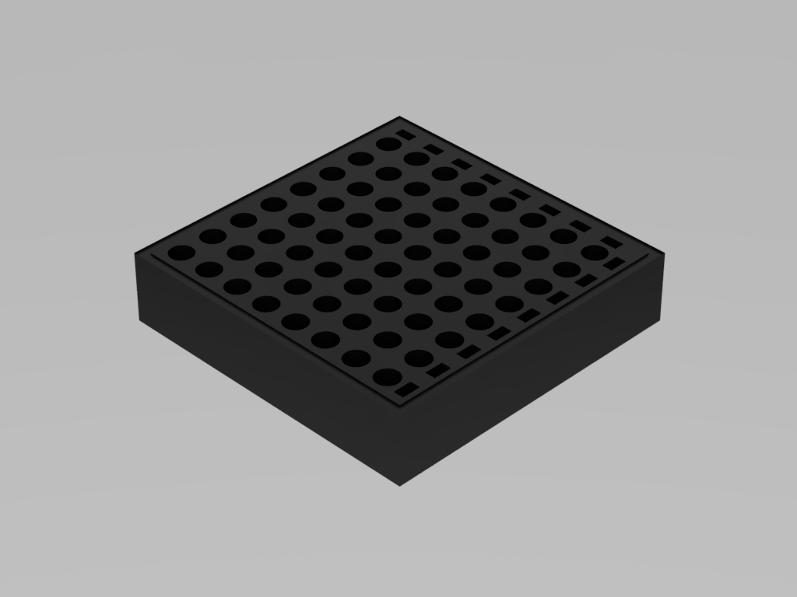

Project Three
CAD designed and 3D printed tube rack to allow for staggered multichannel sampling from 1.5-2ml tubes to 96 well format. With the addition of a few other optimizations, this tube rack has allowed to drastically increase my throughput for tasks such as PCR and qPCR.
 

More optimization, troubleshooting and DIY projects to come.